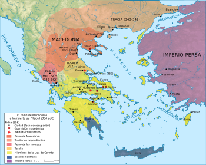

Disa informata
Disa informata
Disa informata
Maqedon ose Maqedonia,ishte emri i mbretërisë që shtrihej në pjesën veriore të Greqisë antike, e kufizuar me mbretërinë e Epirit gjer në perëndim dhe me Trakinë në lindje.Maqedonia antike ekzistoi që nga viti 800 p.e.s. e gjer në vitin 146 p.e.s.. Për një periudhë shumë të shkurtër u bë shteti më i fuqishëm në Lindjen e Afërt antike, pasiqë Leka i Madh pushtoi pjesën e madhe të botës së njohur duke inauguruar Periudhën Helenike të historisë antike greke.
Historiani parë të përmend Maqedoninë në punën e tij është Herodotus, por vetëm shkurt dhe në mënyrë të konfuzuar. Ai nuk thotë asgjë për popullin e saj, as për gjeografinë e mbretërisë, dhe storia e tij për origjinën e monarkisë është një përrallë e trilluar. Nëse duam të besojmë versionin e tij, i bie që mbretët Maqedon të jenë me origjinë Egjyptiane dhe të afërm me Persianët dhe Skythianët e Rusisë, të tërë, sipas Herodotusit, të prejardhur nga Perseus djali Danaus Egjyptian. Thukydides, nga ana tjetër, është disi më informativ në ç’ështjen. Ai në veçanti dallon qartë midis Hellenëve dhe Maqedonasve kur thekson se rraca Maqedone përfshin shumë fise të tjera veç këtyre afër Grekëve të bregdetit Aegean, rajon të cilin Maqedonët e zaptuan nga Thrakët dhe Grekët pas largimit Persian nga Europa në 479. Historiani e quan rajonin e pushtuar ‘Maqedoni e Poshtme’, që ai e dallon nga ‘Maqedonia proper’ ose e vërteta, por është i paqartë në lidhje me vendodhjen e saj. Mirëpo, ne kemi burime të tjera që specifikojnë atdheun origjinal Maqedon, dhe pothuajse të gjitha bien dakord se ai shtrihej në ç’farë është sot Shqipëria qëndrore dhe Republika Maqedone perëndimore, atëherë,banuar tërësisht nga Shqip-folës. Si i tillë ai kufizohej nga Adriatiku në perëndim, Epirotët në jug, ‘Illyri proprie dicti’ në veri dhe Paeonianët në lindje. Rajoni ishte i pasur në minerale, i dendur me pyje për gjueti dhe toka pjellore për bujqësi dhe blegtori. Vendbanimi tij i vazhdueshëm që nga kohët Neolitike dëshmon për rëndësinë ekonomike dhe politike të zones, duke lidhur Adriatikun dhe Danubin me tokat e Egjeut dhe Azia Minore. Por duke qenë i një madhësie të gjerë dhe terreni malor rrallë ndodhte që fiset përbërës të tij të vinin nën një qeverisje qëndrore, por kur ata e arrinin këtë ata bënin epokën. Kjo ndodhi së pari gjatë Erës së Bronxit kur Bryges bashkuan fiset e përçarë Shqiptarë jugor në një konfederaci feudale që shërbeu për avancimin e tyre në Azi në atë kohë. Për së dyti, në fund të shekullit të gjashtë kur invazioni Persian kërcënonte lirinë e Shqiptarëve jugor. Sipas Strabo, ishte merita e të ashtuquajturve Argeadae që çoi në krijimin e asaj që njihet Maqedoni historike. Këta ishin fillimisht shtëpia mbretërore e Orestaeve Epirot të cilët udhëhiqnin një rajon të gjerë nga Gjiri Vlorës deri në Pindus, por më pas, me anë të martesave dhe aleancave politike, ajo u bë Familja e Madhe mbretërore në Shqipëri, sidomos kur Desaretaet (Dexari) e Korçës, atëherë klasifikuar si Epirotë përmes lidhjes me Orestae, u bashkuan me Enkelaet e lumit Drin dhe Pirustaet e Pollogut, me qendër Alorus (Tetovë), të cilët sëbashku zotëronin minierat më të pasura në rajon- Damastion në afërsi të Doberus (Dibër). Këtyre fiseve Pliny u shton edhe Parthinus në luginën e Shkumbinit si 'gentes Makedones', duke nënkuptuar se Arbri në veri të tyre ishte gjithashtu pjesë e konfederacisë Argeadae. Ky fis okuponte rajonet që banoheshin njëherë nga Bryges antik, dhe ka gjasë janë i njëjti popull, emrat duke qenë të ngjashëm-Arbroi/ Arbrus me Brygoi/Bryks. Të gjithë fiset e lartpërmendur ishin pjesë e Besëlidhjes Shqiptare në Mesjetë nën udhëheqjen e Gjergj Kastriotit, njohur si Aleksandër Bej, ‘princ i Maqedonisë dhe Epirit’, jo pa arsye meqë ai pretendonte prejardhje nga mbretët e hershëm Maqedon dhe mbante me krenari përkrenaren e tyre mbretërore në kokë. Në fjalë të tjera, shfaqja e Maqedonisë në kohët historike ishte vetëm një ringjallje e konfederacisë Bryge (Arbrore), mbreti fundit madhështor i së cilës ishte Midas i famshëm. Nga Midas deri te mbreti pare historik i rekorduar, Amyntas I, ne kemi vetëm emrat e udhëheqësve Argeadae. Ishte gjatë sundimit të Amyntas I dhe djali tij Aleksandër I që Argeadaet shtrinë sundimin e tyre mbi tërë fiset jugor Shqiptar deri në Dardani dhe Iliri, pra ‘Illyri proprie’ në veri të lumit Drin (Justin, VII). Mirëpo, pas vdekjes së Aleksandrit djemtë e tij u grindën me njëri-tjetrin dhe ç’do gjë humbi në atë masë saqë dy breza më pas pothuajse tërë zotërimet në Maqedoninë e Poshtme ishin humbur ndaj Grekëve të Kalkidikias. Fiset e ‘Maqedonisë Proper’ ishin aq të përçara midis tyre saqë Elimiotaet e luginës së Osumit dhe Lynkestaet e rajonit të Manastirit u bënë rivalë të rrezikshëm të fronit Argeadae në atë kohë. Duket sikur Lynkestaet ishin bashkuar me Pirustaet e Pollogut kundër fiseve Enkelei dhe Arbri në përpjekje për kontrollin e minierave të Damastium. Martesa e Amyntas, babai Filipit II, me mbesën e Arrhabeus të Lynkestit dhe vajza e një princi Enkeleas të quajtur Sirrhas/Siteas, duket ti ketë ndaluar trazirat për ca kohë, por jo përfundimisht, deri në hipjen në fron të Filipit. Filipi, na thotë bashkëkohori Ifikrates, ‘sundonte mbi tërë Illyrianët, veç banorëve të Adriatikut (Dalmatët)’, dhe me ushtritë e bashkuara Shqiptare ai mundi deçizivisht forcat Hellenike në betejën e madhe të Kaironeas në 338 P.K., duke shtruar rrugën për pushtimin e mëvonshëm Aziatik të Aleksandrit. (Hartat këtu nuk janë një prezantim real gjeografik i Maqedonisë antike që shtrihej perëndimit deri në Adriatik, siç pohojnë Thukydides, Strabo, Pliny, Livy, Ptolemy, etj)
